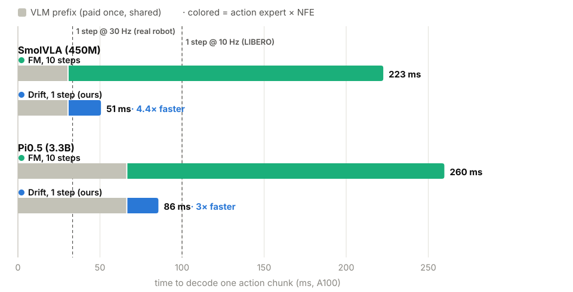
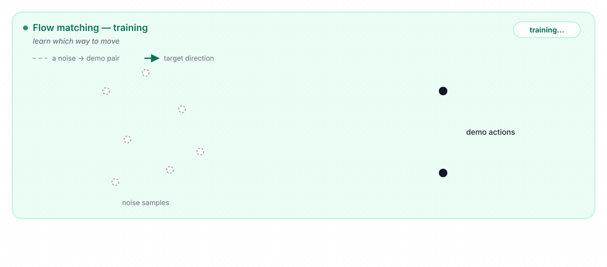
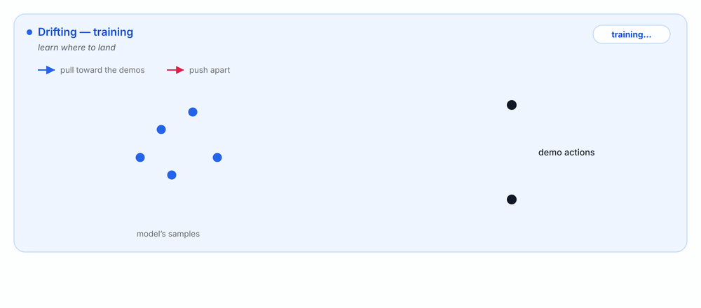
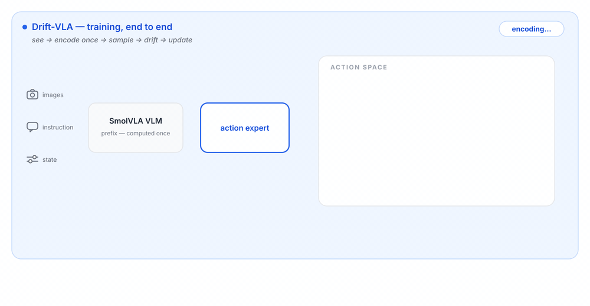
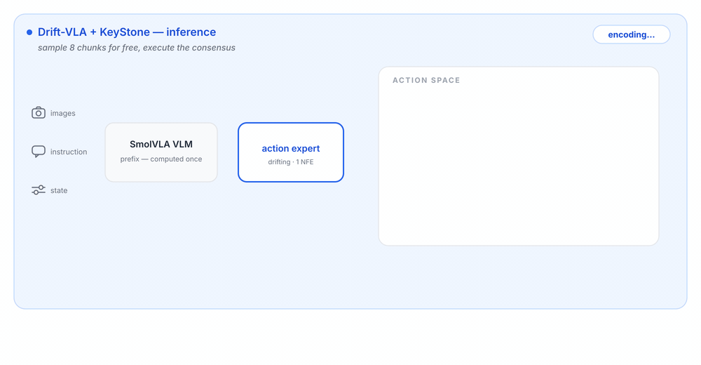

At a Glance
Drift-VLA keeps SmolVLA’s backbone, data, observations, and action chunks fixed. It replaces iterative flow matching with one-step drifting in the action expert. The winning recipe is action-dimension drift + KeyStone: 92.3 ±0.6% LIBERO-Spatial success at 53.5 ms/chunk.
Why one-step matters
Iterative VLA samplers spend K expert passes per action chunk. Drift-VLA asks whether one pass can keep FM-level success.

The shared VLM prefix is paid once; the repeated action-expert calls are what one-step drifting removes.
Base Drift-VLA runs at 50.6 ms/chunk; FM-10 runs at 232.9 ms/chunk. That headroom pays for KeyStone while staying at 53.5 ms/chunk.
Two Action Samplers
Same observation context, same action chunk. The difference is how the action expert is trained and sampled.
Flow matching
Learns a velocity field. Inference integrates it over multiple solver steps, so higher quality means repeated action-expert evaluations.
Drifting
Trains the generator directly. Inference is one forward pass of the action expert: no solver loop and no distillation.
Training signal


Method
Only the action expert objective changes. The backbone, observations, action chunks, and data stay fixed.
The winning loss is action-dimension drift: each real action dimension’s chunk trajectory is matched separately.
Learn a velocity field; sample by integrating multiple expert steps.
Train the generator directly; sample the full chunk in one expert pass.

Results

SmolVLA-FM (10 steps)
- Success
- 88.0 ±1.5%
- Latency
- 232.9 ms
- NFE
- 10
Drift-VLA
- Success
- 90.2 ±1.3%
- Latency
- 50.6 ms
- NFE
- 1
Drift-VLA + KeyStone
- Success
- 92.3 ±0.6%
- Latency
- 53.5 ms
- Sampling
- 8×1
Base Drift-VLA already exceeds FM-10 while running 4.6× faster. KeyStone spends a small part of that headroom and still runs 4.4× faster.
| Method | NFE | Latencyms / chunk | Success (%)LIBERO-Spatial · 200 eps × 3 |
|---|---|---|---|
| SmolVLA-FM (10 steps) | 10 | 232.9 | 88.0 ± 1.5 |
| SmolVLA-FM (1 step) | 1 | 50.1 | 84.0 ± 2.0 |
| Drift-VLA (action-dimension drift) | 1 | 50.6 | 90.2 ± 1.3 |
| Drift-VLA (action-dimension drift) + KeyStoneBest observed | 8×1 | 53.5 | 92.3 ± 0.6 |
Real-World Shopping Rollouts
Representative LeKiwi rollouts across three shop items. Drift-VLA + KeyStone is shown beside the flow-matching baselines under the same task framing.
Matcha tin
Drift-VLA + KeyStone 1 NFE
SmolVLA-FM 10 NFE
SmolVLA-FM 1 NFE
Salt bottle
Drift-VLA + KeyStone 1 NFE
SmolVLA-FM 10 NFE
SmolVLA-FM 1 NFE
Chocolate bar
Drift-VLA + KeyStone 1 NFE
SmolVLA-FM 10 NFE
SmolVLA-FM 1 NFE
Drift Grouping Ablation
Action-dimension drift is the strongest and most stable grouping: match each action dimension’s chunk trajectory separately.
| Rank | Drift grouping | 20k SR (%) | 30k SR (%) |
|---|---|---|---|
| 1 |
Action-dimension drift
one matching unit per action dimension
|
89.0 ±1.4 | 90.2 ±1.3 |
| 2 |
Chunk-level drift
joint matching over the complete action chunk
|
86.5 ±2.1 | 77.8 |
| 3 |
Timestep drift (8 samples)
per-timestep matching with 8 sibling samples
|
78.8 | 81.3 |
| 4 |
Timestep drift (16 samples)
same grouping with more sibling samples
|
76.5 | 79.0 |
| 5 |
Timestep drift (4 samples)
same grouping with fewer sibling samples
|
78.8 | 78.8 |
| 6 |
Shared-temperature drift
one temperature shared across dimensions
|
70.0 | 78.0 |
Same SmolVLA setup and data; only the drift grouping changes.
LIBERO Rollouts
Three LIBERO-Spatial cases: the best Drift-VLA setup succeeds, while the comparison variants fail on the same tasks.
Case A
Drift-VLA + KeyStone success
SmolVLA-FM (10 steps) failure
Timestep drift (4 samples) failure
Case B
Drift-VLA + KeyStone success
SmolVLA-FM (10 steps) failure
Timestep drift (4 samples) failure
Case C
Drift-VLA + KeyStone success
SmolVLA-FM (10 steps) failure
Timestep drift (4 samples) failure